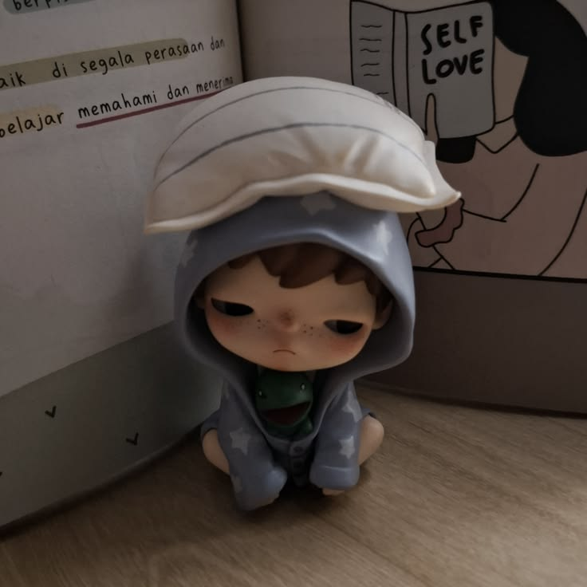

Website Vellycia Jeslyn
Ini adalah latihan membuat website tugas Vellycia Jeslyn. Website dibuat menggunakan HTML dan CSS.
Lihat Proyek
Ini adalah latihan membuat website tugas Vellycia Jeslyn. Website dibuat menggunakan HTML dan CSS.
Lihat Proyek